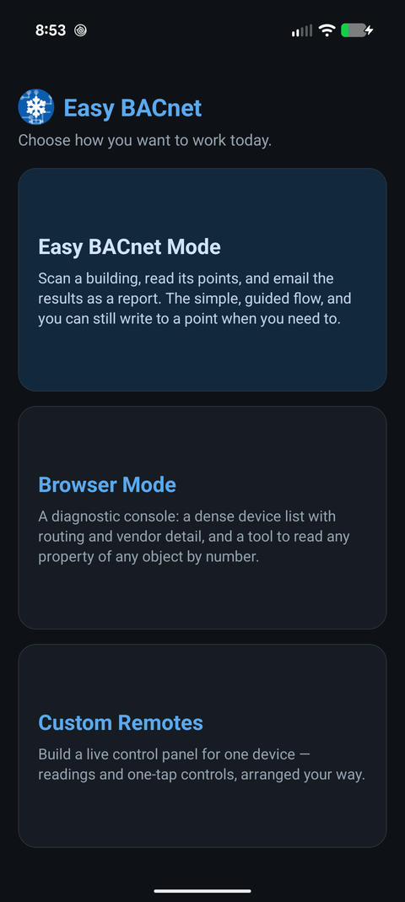

How do I scan for my BACnet points list?
Updated 11 October 2026
Get the phone onto the same network as the building controls
(usually a USB-C Ethernet adapter into the controls switch), open the app and tap
the Easy BACnet Mode card, tap Scan for Devices,
let the scan finish, then tap Export Results. The app reads every
point on every device it found, builds an Excel spreadsheet (.xlsx) and
opens your phone's share sheet so you can email it or save it. Tap
View Results instead if you want to look through the devices and
points on the phone first.



Before you start
- Get on the controls network. On most sites the BAS lives on its own VLAN or a flat network behind the supervisory controller, not on the office Wi-Fi. The usual way in is a USB-C Ethernet adapter plugged into a spare port on the controls switch (often in the JACE or supervisory panel), with a static IP in the controls range or DHCP if that VLAN has it. If the site has a Wi-Fi access point on the controls network, that works too. Guest Wi-Fi or mobile data will find nothing. See why can't I find my BACnet devices? if the scan comes back empty.
- Get permission. BACnet IP itself has no login, so reading points needs no password, but you still need the owner's or IT's OK to plug into their network.
- Easy BACnet speaks BACnet IP only. MS/TP (RS-485) devices show up when a BACnet router puts them on IP — see does Easy BACnet support MS/TP?
Step 1 — Open Easy BACnet Mode
The first time you open the app it asks you to Choose your language (English, Español, Deutsch, Français, Português or Thai) and to accept a short safety notice (I Agree). After that it opens on Choose how you want to work today with three cards:
- Easy BACnet Mode — the scan, read and export flow this guide covers.
- Browser Mode — a diagnostic view with routing and vendor detail, and a tool to read any property of any object by number.
- Custom Remotes — your own control screen for one device (guide).
Testers on the beta version also see a fourth card, Control Panel Builder (guide). Tap Easy BACnet Mode.
Step 2 — Scan
The scan screen shows the network your phone is on and its IP address, so you can check you're on the right one before you start. If the phone isn't on Wi-Fi or Ethernet at all, it tells you to connect first instead of scanning.
Tap Scan for Devices. The app calls out to every BACnet IP device on your network and keeps asking, because a single call is easily missed, especially over Wi-Fi. It finishes a few seconds after the last device answers, or after about 30 seconds if nothing does. A counter shows the seconds elapsed and how many devices have answered; then it reads each device's name and model. Allow up to a minute on a big site.
When it finishes you get a green banner — Success! Found 6 device(s) — or a red one, No devices found. On success two buttons appear: View Results and Export Results. If it comes back red, the screen shows the network that was scanned, a short checklist and a ping tool to test a controller's IP address; see also what do I do if I can't find my BACnet devices?.
The summary may warn about unconfigured devices or duplicate Device IDs. Unconfigured means the device answered with instance 4194303, the reserved wildcard number no commissioned device should use, so it was probably never given an ID. Duplicates mean two controllers share an ID. Both are commissioning problems to pass to whoever looks after the system. See BACnet Device IDs explained and duplicate Device IDs.
Devices on another subnet
A scan only reaches your own subnet. For anything further away, open the menu (three dots, top right):
- Add device by IP… — type the controller's IP address or host name and UDP port (47808 is standard) and tap Add.
- BBMD for remote networks… — enter the site's BBMD address once and every scan goes through it, so it reaches the other subnets the BBMD serves.
Step 3 — Look at what it found (optional)
Tap View Results. Each device shows its name, Device ID and IP address, plus the model when the device reports one. Tap a device and the app reads its list of points. On a big controller this takes a while: the app reads one item at a time, because plenty of small controllers and gateways struggle with bigger requests. It loads up to 2,000 objects automatically; past that, use Add object by number in the device screen's menu (three dots).
Tap a point to see its Present Value, Units, Status and Description, with a Refresh button for a fresh read. On commandable points you also see Commanded At and Falls Back To: whether something is holding the point at a priority, and what it will go to when released. When a damper won't close or a fan won't stop, check this first.
Step 4 — Export
Back on the Easy BACnet Mode screen, tap Export Results. On the free version the app first asks Watch a short ad? — choose Watch ad to continue, Remove ads to see Easy BACnet Pro, or Cancel. No ad plays unless you choose it, and if no ad can load (no signal in the mechanical room) the export goes ahead anyway.
The app then reads every point on every device: names, present values, units and status. A progress box (Exporting BACnet IP Results) shows which device and point it is on; Cancel stops it. Keep the phone connected until it finishes.
When it finishes, Android's share sheet opens titled Send export by
email, with a file named like EasyBACnet_20260930_1415.xlsx
attached, the subject BACnet IP Export plus the date, and a line saying
how many devices and points it holds. Pick your email app, or any other app
(Drive, Files, a messenger) to save or send it. The app never sends anything by
itself.
What is in the spreadsheet
One sheet, two tables:
- Device summary at the top: Devices Found, then one row per device with Device ID, Device Name, Device IP and the number of Points.
- Point detail below it, one row per point: Device ID, Device Name, Device IP, Object Type, Object Number, Point Name, Present Value, Units, Status. Each device also gets its own bold row, so every device and its IP is listed even if it has no points.
Any point whose Status is not Normal (in alarm, fault, overridden or out of service) is shaded red. IDs and object numbers are stored as numbers, so you can sort and filter straight away. That covers what an integrator or analytics vendor usually means by a points list — see a vendor asked for my BACnet information and exporting to Excel or CSV.
Good to know
- Nothing is uploaded anywhere. The app has no account and no server. The spreadsheet exists on your phone and wherever you send it.
- Scanning and reading don't change anything on the equipment. Writing has to be switched on separately — see how to write to a BACnet point.
- Dark screen by default. Change it under Appearance in the menu (Dark, Light or Follow system) if you are working outside. Language is in the same menu.
- Scan results are not saved. They stay in memory while the app is open; export them if you want a record.
Check it on your own network. Easy BACnet is a free Android app that finds BACnet IP devices and reads their points in a couple of taps.
Get it on Google Play